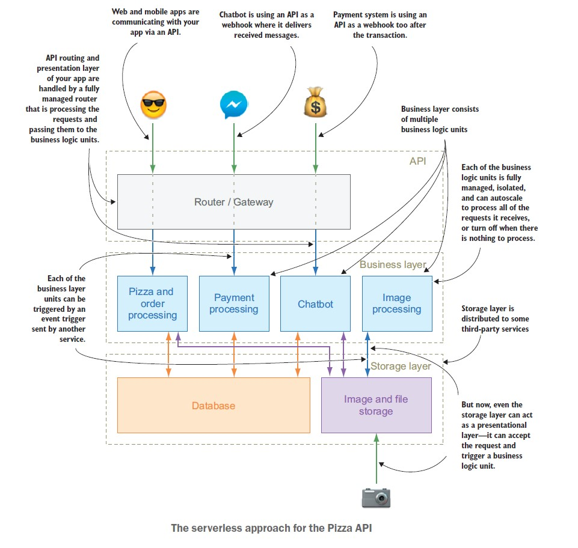
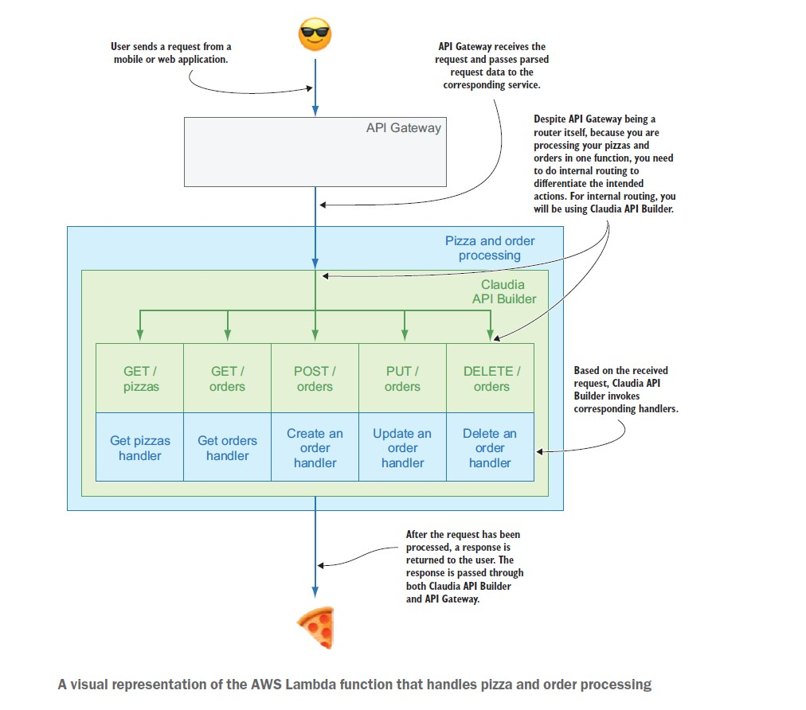
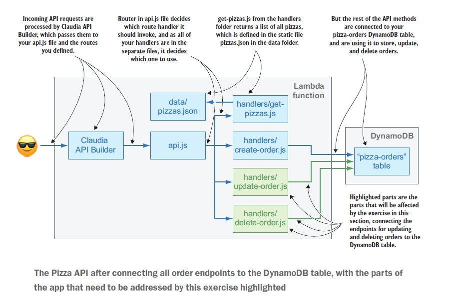
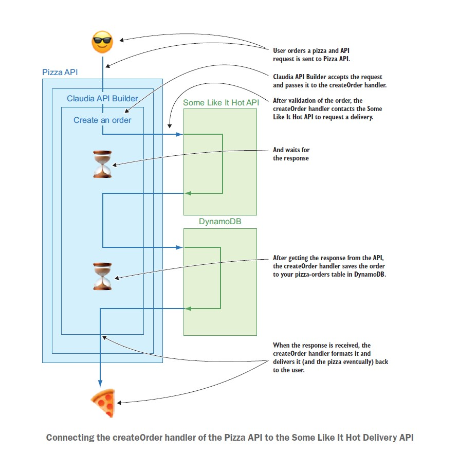
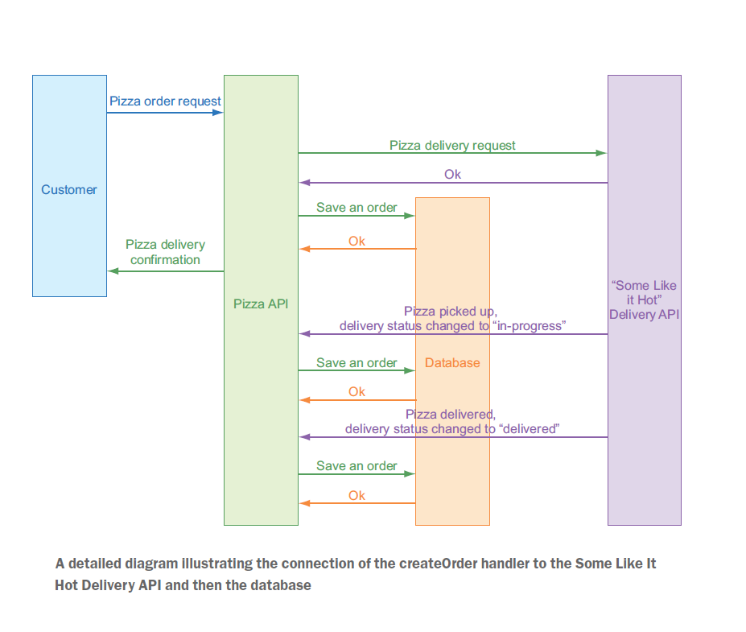

Pizzeria - now on AIR
This is the online pizza ordering portal which utilizes the power of serverless service by AWS.
This is the second serverless project that I recreated from another book “Serverless Application with Node.js Using AWS Lambda and Claudia.js” from the author Slobodan Stojanovic and Aleksandar Simovic
The book is all about the two projects one of which is to move the Offline business of the Fictitious character Aunt Maria Pizzeria business to online.
It has a very nice and minimal introduction to the Claudia JS framework which encapsulates the configuration and integration of API Gateway and lambda.
Now, this pizzeria app has multiple channels which are completely separated from each other to order/cancel/payment and all the basic service that online pizza ordering system has for Aunt Maria's Pizeeria shop.
1. Web channel
2. Facebook chatbot
3. SMS chatbot
4. Payment channel

All these channels were separated and developed in an isolated environment(lambda functions) and a single API is used to route the request to the targeted function.
This is the same architecture used in the modern-day microservices which removes dependency and load from the system, as compared to the monolithic architecture.
Next section we will explore more about the architecture of the Web, Facebook, and SMS chat boot.
As a Bonus!! This book also expose you to another project where it demonstrates the migration of on-prem Express.js architecture to the serverless, if you know about the lambda function or any other FaaS it is designed to serve as single request at a time and not meant to be used as the webserver but it is possible to serve the express.js web server in the lambda function.
You may think using the lambda as a webserver is like an antipattern design, but they do have a very convincing explanation. Please do look once you have done with the Pizzeria app.
WEB CHANNEL
Services, Framework, and language used:
1. AWS Lambda
2. AWS API Gateway
3. Claudia API builder framework for Node.js
4. Node.js
5. AWS Dynamo DB
Let start with the Web Channel
A normal order request contains the following
· Get Order – This event will trigger when a user try to find the available pizza from the user interface
· Create Order – Event when the user made a request for a particular pizza, which then will be saved to the storage DB
· Update Order – Though update order includes several other things an order can have but for simplicity we only using the update order for changing the state of the order for example changing the order state from pending to in-progress and finally delivered
· Delete Order or Cancel Order – When user wins over his craving and decides eat salad instead.
Every path you see in the below figure is the separate path that was created by the Claudia API Builder to serve the request from the user and send/receive the feed/response from their correspoing the lambda function, which them server back to the user accordingly

1. The user sends the request from a mobile or web application that will be transmitted to backend logic through the API Gateway.
2. Since we are processing all the functions in the same lambda function we need to do internal routing to find action(GET/POST/PUT/DELETE) should trigger the proper handler function(get_orders.js/create-order.js/update-order.js etc).
3. Based on the received request, Claudia API invokes corresponding handlers
4. API Gateway parse the request and send to the corresponding service for example creating new order a POST request sent to the “/orders” path and its corresponding handler create-order.js will get triggered to serve it likewise for retrieving a list of orders a GET request sent to the “/pizzas” path and its corresponding handler get-order.js gets triggered.
5. Once the request is fulfilled by the lambda handler response travel back to the user through Claudia to API Gateway
Every ordering system has to store the order in some location, so that I can be referenced later.
To have the persistent storage of the order we will be using the Dynamo DB
DynamoDB tables are similar to collections in traditional NoSQL database, it can store the data in key-value and document data structure, in this project we are using the Key-value format
The below figure will show us how the function will interact with Dynamo DB and stores the information about order

Once oder is placed we use a third-party API to handles the delivery state of our order
Basic functionality of this dummy API is to return then delivery ID immediately when a request is sent to it and after some time(approx. 2 minutes ) it will send the delivery status of the order using the webhook.
When a create order request is sent to its function names create-order.js, it calls the delivery API(ie Dummy API) to inform the delivery service of the new order and in return this dummy API will returns the unique delivery id against order request.
Upon receiving the response from the Dummy API create-order function will make the entries in the Dynamo DB table to save the state of the order.

Detailed illustration of the order flow from customers to delivery API.
1. The customer requested the Pizza API
2. A new order request will trigger the create_order function which makes entry to the DynamoDB with the status of order “pending” and trigger the Dummy API “Some Like it Hot Delivery”
4. On the above event response, it triggers the update_order function which updates the status of an order from “pending” to “in-progress” to the Dynamo DB
5. After 2 minutes Dummy API again send a response to the Pizza API which mark the order status to “Delivery ”

This is all we have to configure and code to make it all work.
In the next section we will make a frontend which communicate to all of the above functions through API
STAY TUNED